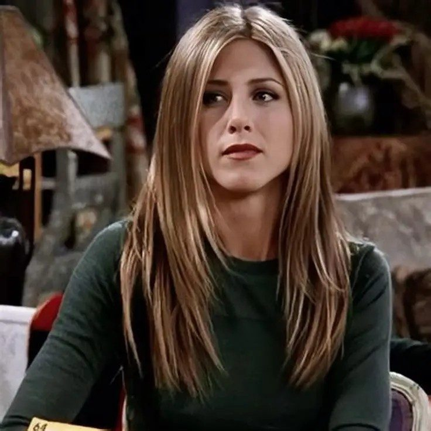
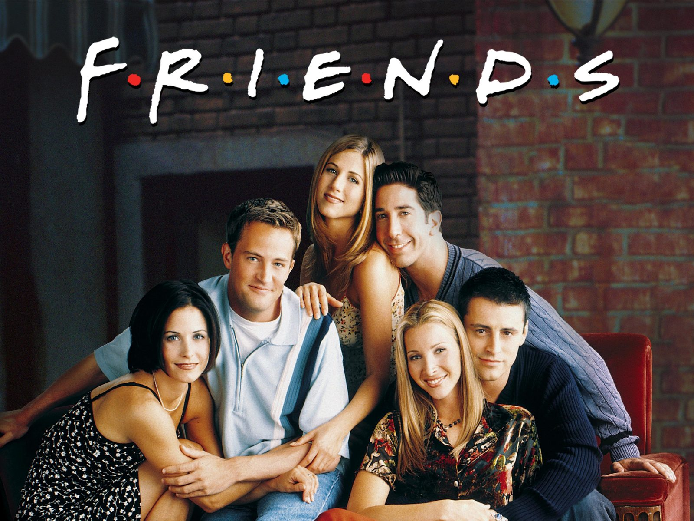
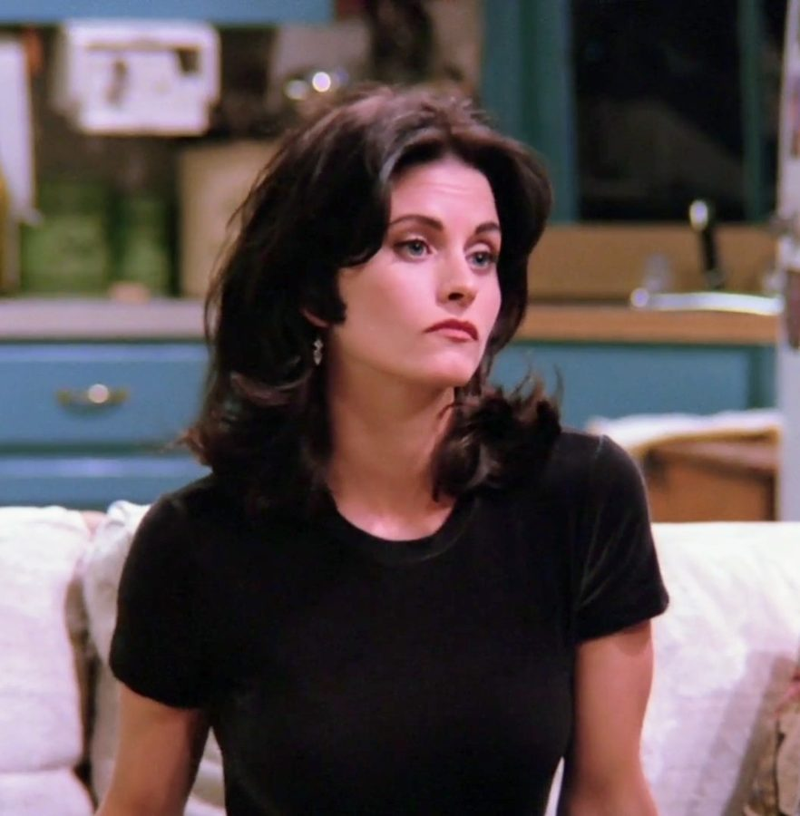
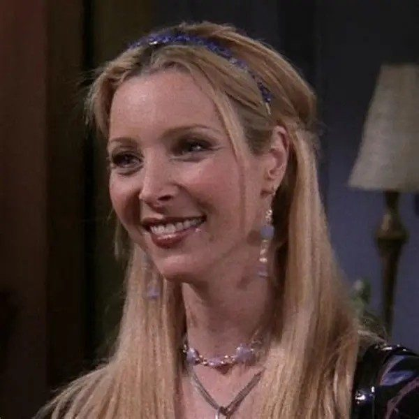
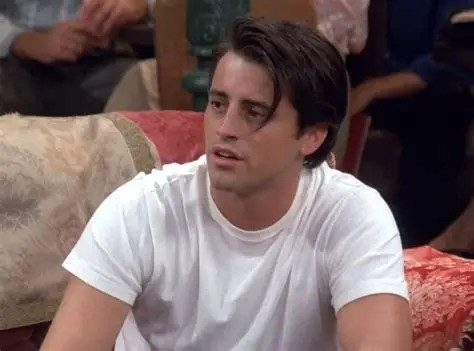
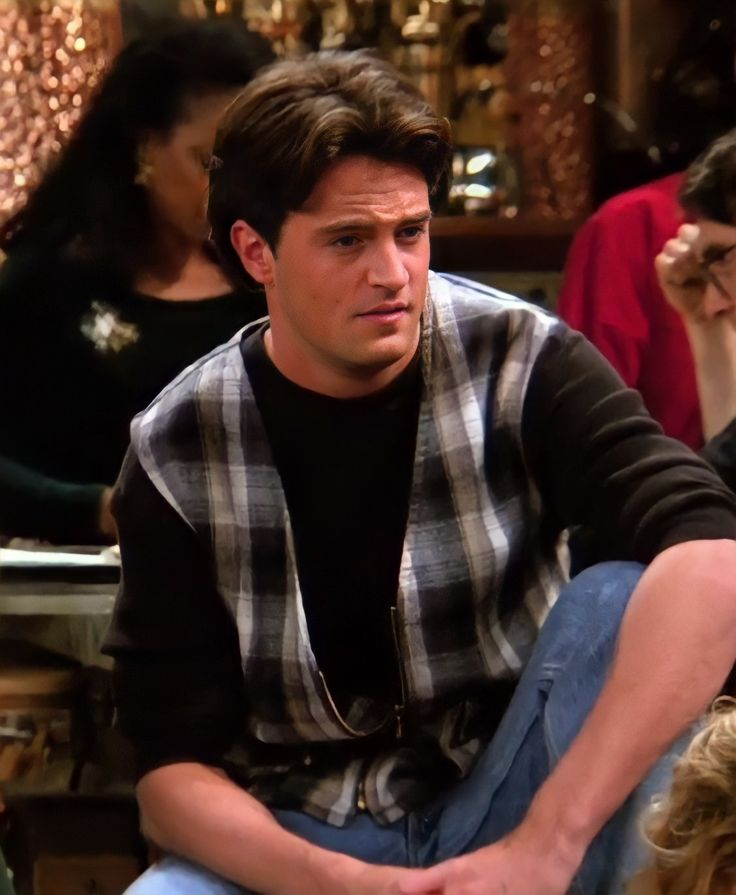
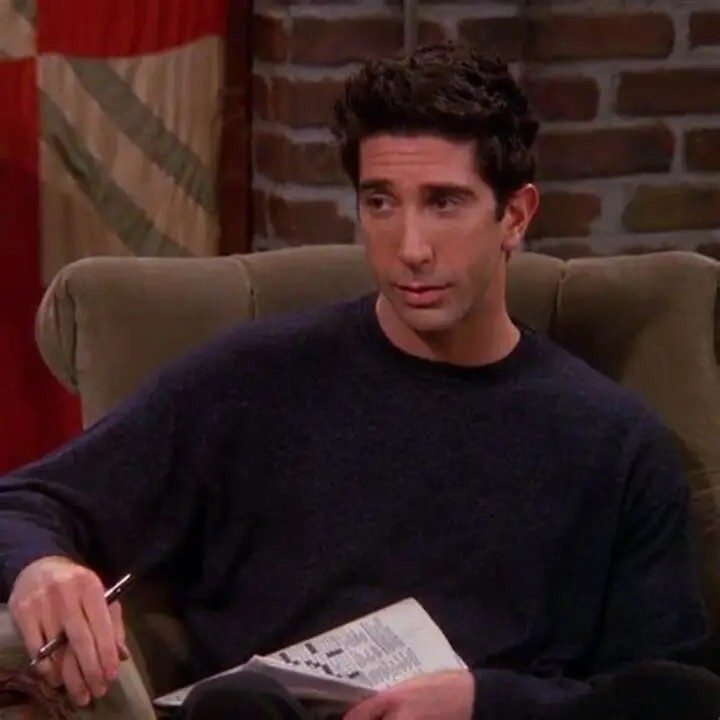
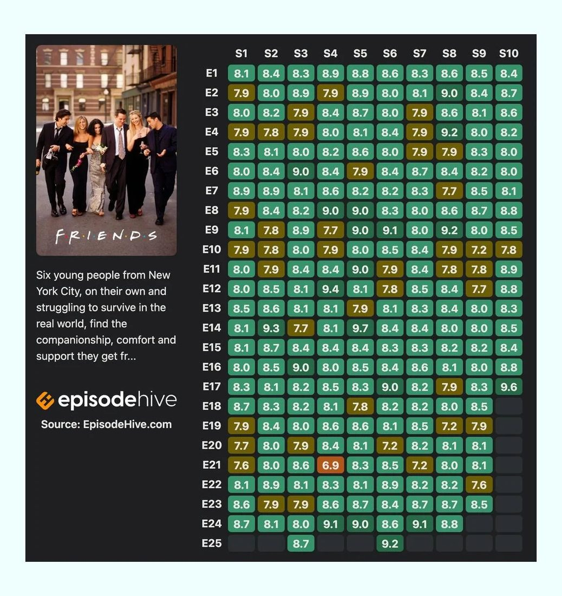

Rachel Green
Interpretada por Jennifer Aniston. Rachel comienza la serie buscando construir una nueva vida independiente y desarrolla una importante evolución personal y profesional.
Una historia sobre seis amigos, sus aventuras, sus relaciones y todos los momentos que comparten en Nueva York.

Friends es una comedia de televisión que sigue la vida de seis amigos que viven en Nueva York: Rachel, Monica, Phoebe, Joey, Chandler y Ross.
A lo largo de la serie, el grupo enfrenta situaciones relacionadas con la amistad, el amor, el trabajo, la familia y la vida adulta.
Uno de los lugares más importantes de la historia es Central Perk, la cafetería donde los amigos pasan gran parte de su tiempo juntos.
La serie cuenta con 10 temporadas y presenta la evolución de sus personajes y de sus relaciones durante varios años.

Interpretada por Jennifer Aniston. Rachel comienza la serie buscando construir una nueva vida independiente y desarrolla una importante evolución personal y profesional.

Interpretada por Courteney Cox. Monica es conocida por su personalidad organizada, competitiva y por su pasión por la cocina.

Interpretada por Lisa Kudrow. Phoebe destaca por su personalidad divertida, original y por su particular forma de ver la vida.

Interpretado por Matt LeBlanc. Joey es un actor que destaca por su sentido del humor, su espontaneidad y su gran amistad con el grupo.

Interpretado por Matthew Perry. Chandler es conocido por su sentido del humor y por utilizar comentarios sarcásticos en muchas situaciones.

Interpretado por David Schwimmer. Ross es paleontólogo y hermano de Monica. Sus relaciones y su historia con Rachel son una parte importante de la serie.
24 episodios
24 episodios
25 episodios
24 episodios
24 episodios
25 episodios
24 episodios
24 episodios
24 episodios
18 episodios
